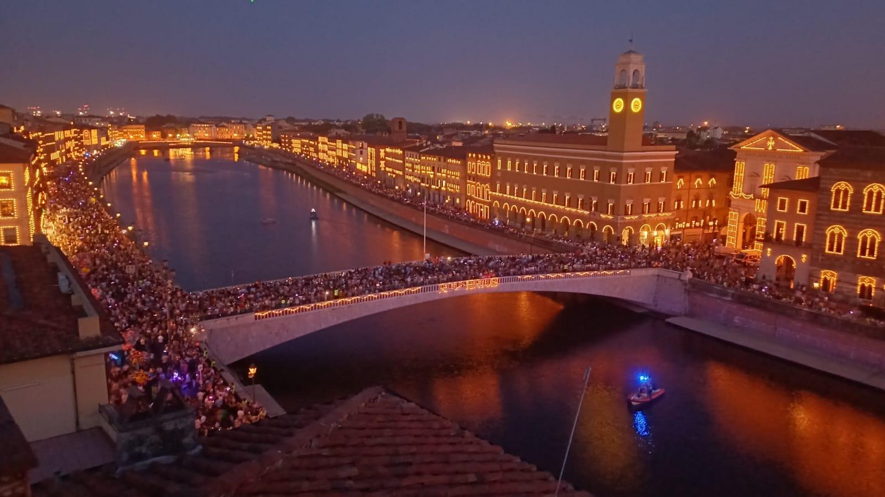
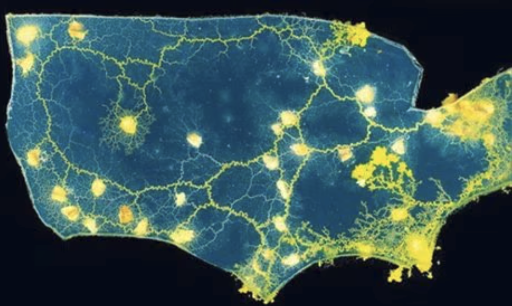
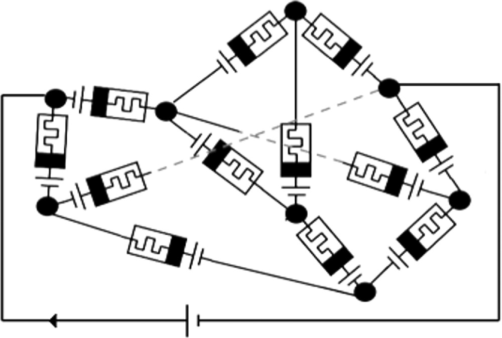
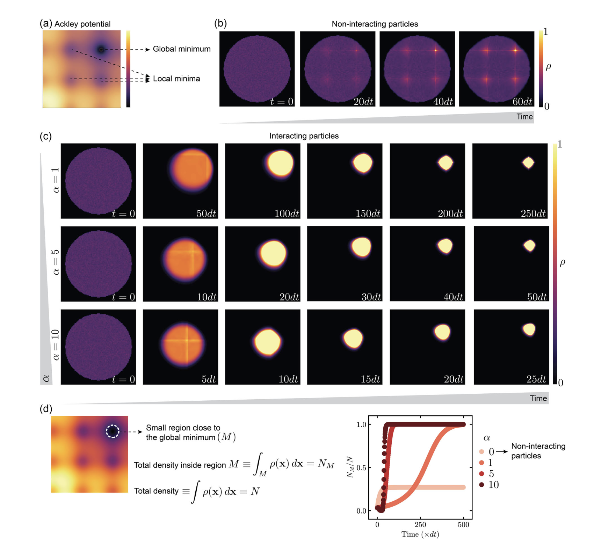

nonequilibrium • complex systems • physical intelligence
Self-organizing systems and conservation laws
June 17th, 2026
This post discusses a recent paper I co-authored, A Unifying Approach to Self-Organizing Systems Interacting via Conservation Laws. A less technical version may also appear on Substack. The manuscript appeared in April but I found the time to talk about it only now. The paper is technical, but the message is simple: many self-organizing systems are not mysterious because they are complicated. They become intelligible when we identify the constraints that organize their motion. ps. I have found the time because Pisa has the known Luminara fest

and on the 17th we have a free day - I can write a blog post. It's going to be a quick one, but I hope it is useful.One of the pleasures of working on complex systems is that, after a while, the same animal starts appearing under different disguises - and we are trained to see the pattern. It may be an electrical circuit, a fluid network, a mechanical structure, a biological organism, or an optimization algorithm. The vocabulary changes. The equations change. The figures in the papers certainly change. But underneath, one finds the same kind of constraint: something is conserved locally, and the system has to organize around that fact.
Electrons do not simply disappear at a node. Fluid does not vanish inside a pipe. Forces cannot fail to balance forever in an elastic network. Cytoplasm in a slime mould tube has to go somewhere. These are almost embarrassingly elementary statements, but we noticed that these facts are rarely discussed in the literature. Conservation laws constrain the dynamics, but they are often treated as a technical detail rather than a central organizing principle. The paper is an attempt to change that perspective and show that conservation laws lead to a common mathematical structure, which we call a projector, that shapes the dynamics of many different systems.
In the paper I want to discuss here, we tried to make this idea precise. While it appeared a few months ago in press, but it has been in the making since 2021, when Fabio Traversa, Fabrizio Bonani, Michele Bonnin and published the technical work on the subject, focusing on memristive systems. The central claim I want to push for is that many physical, biological, and engineered systems can be understood through projection operators generated by local conservation laws. These projectors do not merely simplify the algebra. They define the subspace in which the dynamics actually lives.
This is the kind of idea I like because it sits halfway between physics and computation. It is not computation in the narrow sense of a CPU executing instructions (which has gazillions advantages, as some key disadvantages). It is computation in the older and more material sense: a physical system is prepared, constrained, driven, and allowed to relax or adapt. The answer, if there is one, is read from the organization that emerges. Your brain is not a CPU. It is a network of neurons constrained by physics. The same is true of slime moulds, spring networks, and memristive circuits. They are not simulating algorithms. They are physical systems. Here we will not discuss computation per se, but that any computing system based on self-organization must be a form of physical system, and therefore subject to physical constraints.

The biological example is the one that catches the eye, so let us put it upfront. Slime moulds are absurdly cool. The original group bringing slime mould to the attention of the scientific community is led by Nakagaki et al (first author of that paper was Atsushi Tero) in Japan (our models are based on theirs as well). Slime moulds have no (central) brain, no central controller, and no blueprint of the problem they are solving. Yet they form networks, reinforce useful tubes, retract useless ones, and adapt to the environment in ways that look uncomfortably close to problem solving. They are not doing graph theory in their head. They do not have a head. The graph theory is in the body.
- 1. The shared grammar of very different systems
- 2. Projectors are not decoration
- 3. PrEDS, memristive networks, and projective reduction
- 4. Slime moulds as adaptive flow networks
- 5. Springs, physical learning, and elastic constraints
- 6. Mean field theory without pretending the network is gone
- 7. Swarms, optimization, and why the collective matters
- 8. The point of the exercise
1. The shared grammar of very different systems
A good place to begin is with the oldest example: circuits. A circuit is a graph. The nodes are junctions, the edges are components, and the laws of the system are partly written before we even specify the resistors, capacitors, sources, or memristors. Kirchhoff's current law says that currents must balance at nodes. Kirchhoff's voltage law says that voltage drops must be compatible around loops.
If \(B\) is the incidence matrix of the graph, the current conservation law is simply
$$ B i = 0. $$
The current vector \(i\) is not allowed to point in arbitrary directions. It must live in the subspace selected by the graph. The graph is not a passive drawing of the system. It is already part of the dynamics.
Likewise, if \(A\) is a cycle matrix, then loop constraints can be written as
$$ A v = 0. $$
The same grammar reappears elsewhere. In a fluid network, edge currents become flows and voltages become pressure drops. In a spring network, currents and voltages are replaced by forces and displacements. In biological transport, tubes carry cytoplasm rather than charge, but the conservation law is still local. Stuff enters, stuff leaves, and the node does not get to cheat.
This is the first useful abstraction. The microscopic objects may be completely different, but many systems share a network structure in which local conservation constrains global behavior. It is not a metaphor. It is a piece of linear algebra sitting underneath physics, biology, and engineering.
2. Projectors are not (just) decoration
Once one writes conservation laws using incidence and cycle matrices, projection operators appear naturally. For example,
$$ \Omega_B = B^T(BB^T)^{-1}B, $$
and similarly
$$ \Omega_A = A^T(AA^T)^{-1}A. $$
These objects are easy to misunderstand. A projector is sometimes introduced as a mathematical convenience, a way of cleaning up an equation. Here it is more than that. The projector says which part of a vector is compatible with the local laws of the network. It is the algebraic form of the constraint.
There is also a thermodynamic way to see why these objects matter. Dissipative systems are governed by fluxes and forces. Currents and voltages. Flows and pressure drops. Velocities and forces. In each case, the system dissipates energy while respecting the constraints imposed by the graph. The projectors appear in the dissipation structure, in the response functions, and in the way the network maps sources into currents or forces into displacements.
This is the part of the story that I find conceptually important. A conservation law is not just an equation you impose after the fact. It shapes the possible motions of the system. Once this is understood, projectors become physical objects in disguise: they encode what the network permits.
From here, the idea of a projective dynamical system is almost unavoidable. If the dynamics must remain in, or be driven toward, a constrained subspace, then one can write equations in which a projector explicitly organizes the motion. This is the point at which PrEDS enters.
3. PrEDS, memristive networks, and projective reduction
PrEDS stands for PRojective Embedding of Dynamical Systems. It grew out of work on memristive networks, where projective methods were used to reduce the dynamics of a complicated circuit to the relevant subsystem selected by Kirchhoff constraints.
This is worth saying carefully. A disordered memristive circuit can have many internal variables, one for each device. Each memristor changes its resistance depending on the current flowing through it. But that current is not a private local quantity. It depends on the whole circuit, because the whole circuit must satisfy Kirchhoff's laws. So the memory update of one element is coupled to the state of all the others through the graph.
In other words, the network is high-dimensional, but its dynamics is not arbitrary. It is squeezed through a lower-dimensional structure determined by conservation laws. Projective methods make this precise: one writes the circuit equations in terms of operators such as \(\Omega_A\) and \(\Omega_B\), which extract the admissible loop or node components. The messy dynamics of many interacting memory elements is reduced to a constrained subsystem.

A simple memristive model has a state variable \(x\), often taken between 0 and 1, which interpolates between high and low resistance. In a linear model one writes something like
$$ R(x) = R_{\rm on}x + R_{\rm off}(1-x), $$
and the memory variable evolves according to the local current, with some decay term. In a network, however, the current vector is not computed element by element independently. It is obtained by solving the constrained network problem. This is where the projector enters.
Schematically, the memristive network dynamics can be written in a form where the update is filtered through a graph projector:
$$ \frac{d x}{dt} = \hbox{projected current response} - \hbox{decay}. $$
The innocent phrase "projected current response" hides the interesting part. It means that the network topology has already decided which current patterns are physically allowed. The memristors then adapt to those patterns. The memory is local, but the current is global. This is why memristive networks are interesting as physical computing systems: they do not merely store information in many places; they collectively reorganize under constraints.
PrEDS abstracts this idea. Start with a dynamical system, lift it into a higher-dimensional space, and use a projector to control the admissible collective dynamics. In a physical network, the lifted space may simply be the space of all edge variables. In a mean-field version, the lifted space may be a set of replicas or agents. In both cases, the projector is the mathematical object that tells the system how to reduce itself.
The generic form is
$$ \frac{dX_i}{dt} = \Omega F_i(\Omega,\{X_j\}) - \alpha(I-\Omega)X_i. $$
The first term evolves the system inside the projected structure. The second term damps the part that lives outside it. This is a very compact way of saying that the long-time dynamics is confined to the subspace selected by \(\Omega\).
In the memristive case, this connects to a broader idea: some networks can solve hard problems not by simulating an algorithm step by step, but by physically relaxing through a constrained landscape. The projector is part of the mechanism by which the high-dimensional device dynamics is compressed into an effective lower-dimensional search.
4. Slime moulds as adaptive flow networks
The slime mould example is conceptually irresistible because it says the same thing in a completely different dialect. Physarum polycephalum forms a network of tubes through which cytoplasm flows. Tubes that carry flow are reinforced; tubes that do not are gradually abandoned. The organism explores its environment by changing the very network through which it transports material.
The flow along a tube is often modeled using a Poiseuille-like law,
$$ Q_{ij} \propto \frac{D_{ij}^4}{L_{ij}}(p_i-p_j), $$
where \(D_{ij}\) is the tube diameter, \(L_{ij}\) is the tube length, and \(p_i-p_j\) is the pressure difference between the two nodes. The fourth power is the whole game: a modest change in diameter can dramatically change the conductance of a tube.
Then one writes an adaptive law of the general form
$$ \frac{dx_{ij}}{dt} = \beta^{-1}|Q_{ij}|-\kappa x_{ij}. $$
Flow reinforces the tube; decay weakens it. This is not a centralized algorithm. It is a local feedback rule. But because all flows are coupled through conservation at the nodes, the result is a global reorganization of the organism.
This is why slime moulds are more than a cute biological anecdote. They are a physical demonstration of a principle: local adaptation plus conservation can perform a search over network configurations. The organism does not need to know the shortest path in advance. It discovers efficient transport by letting flow and structure co-determine one another.
In the projective formalism, this looks strikingly similar to the circuit case. Pressure drops play the role of voltages. Flows play the role of currents. Tube conductances play the role of adaptive resistances. Conservation of mass gives the graph constraints. The projector then packages these constraints into the dynamics.
The point is not that slime moulds are secretly electrical circuits. That would be too crude. The point is better: circuits and slime moulds are both constrained adaptive networks. They share a grammar, not a material substrate.
5. Springs, physical learning, and elastic constraints
Spring networks add a third example, somewhere between computation, materials, and mechanics. Imagine a network of elastic elements. Each edge is a spring. The nodes move. Forces are transmitted through the structure. If the stiffnesses of the springs can adapt, then the network can learn a mechanical response.
Here the conservation law is force balance. At equilibrium, the total force at each node must vanish. Around loops, displacements must be geometrically consistent. Again, the graph is not passive. It defines which mechanical configurations are allowed.
If \(z_{ij}\) denotes an adaptive stiffness-like memory variable, one can write rules where the spring changes depending on the local deformation energy. Schematically,
$$ \frac{dz_{ij}}{dt} = \alpha z_{ij} - \beta^{-1}(\Delta l_{ij})^2. $$
The squared extension is local, but the extension itself is not independent of the rest of the structure. It is obtained after the network has satisfied force balance. This is the same motif again: local adaptation driven by a global constrained response.
These spring networks are interesting because they make the phrase "learning machine" almost literal. The material changes its internal parameters so that future mechanical responses are different. It is not software running on hardware. The hardware is the dynamical system.
For the purposes of the paper, spring networks serve as a clean third example showing that the projective structure is not an accident of electronics or fluids. Whenever local conservation laws constrain edge variables on a graph, projection operators are nearby.
6. Mean field theory without pretending the network is gone
The second main contribution of the paper is the mean-field theory. Mean-field methods are often introduced as a way to avoid dealing with all the microscopic details of a system. Replace the crowd by its average. Replace the local mess by an effective field. This can be useful, but it can also be dangerous if it erases the structure that made the system interesting in the first place.
The PrEDS construction gives a more controlled version of this idea. One uses a mean-field projector,
$$ \Omega_{\alpha\beta}=\frac{1}{N}, $$
which maps a population of replicas or agents onto their average. This does not mean that the original graph-based projectors become irrelevant. Rather, the graph projector describes the constrained response of each physical system, while the mean-field projector describes the collective behavior of an ensemble or lifted representation.
The mean-field PrEDS equation has the same general form:
$$ \frac{dX_i}{dt} = \Omega F_i(\Omega,\{X_j\}) - \alpha(I-\Omega)X_i. $$
The interpretation is simple. The first term says: evolve according to the projected collective dynamics. The second says: damp deviations away from the collective subspace. For the mean-field projector, that subspace is consensus. The replicas may begin differently, but the dynamics contains a force that contracts them toward a shared behavior.
One nice feature of the construction is that fixed points of the original system are preserved in the lifted system. But their stability can change, because the lifted space has transverse directions that are damped. In practical terms, the collective system can move through the landscape differently from independent agents. It is not just many copies of the same dynamics. It is a coupled object.
This is where the story starts to touch optimization.
7. Swarms, optimization, and why the collective matters
The final step is to reinterpret mean-field PrEDS as a particle swarm. Suppose the lifted variables are viewed as positions of particles in a landscape. If every particle follows its own gradient, then the population behaves like many independent gradient descents. Some particles fall into one minimum, some into another. Local traps remain local traps.
But PrEDS changes the situation. The particles feel an averaged gradient and an attraction toward one another. A simplified form of the dynamics is
$$ \frac{d r_\beta}{dt} = \frac{1}{N}\sum_{\theta} f(r_\theta) - \frac{\alpha}{N}\sum_{\theta}(r_\beta-r_\theta). $$
If \(f=-\nabla V\), then the first term is an average descent direction and the second term is a harmonic coupling. The swarm does not behave like a bag of independent particles. It behaves like a collective search process.
The intuition is very nice. Some particles may find better parts of the landscape. Because the swarm is coupled, they can pull the others. The population can concentrate near deeper minima rather than spreading passively among all available local wells.

In the paper, this is demonstrated with multi-well potentials and with an Ackley-type landscape. The noninteracting density spreads among local minima. The interacting PrEDS density concentrates near the global minimum. Increasing the coupling parameter \(\alpha\) accelerates the concentration.
This is not a claim that projectors magically solve optimization. Nothing does. But it is a principled bridge between self-organizing physical systems and collective optimization. The same mathematical structure that appears in circuits, slime moulds, and springs also produces a swarm-like search dynamics.
This is the sort of connection that makes the subject worth pursuing. It is not merely that nature inspires algorithms. It is that the algorithms may be shadows of physical principles we already know: conservation, dissipation, projection, and collective adaptation.
8. The point of the exercise
The paper is technical, but the message is simple enough. Many self-organizing systems are not mysterious because they are complicated. They become intelligible when we identify the constraints that organize their motion.
A conservation law defines a subspace. A graph turns that subspace into a projector. A projector shapes the dynamics. Adaptation changes the parameters inside that constrained dynamics. Mean-field projection then gives a way to understand collective behavior. And, in some cases, this collective behavior looks like optimization.
This gives a useful way to think about unconventional computing. We should not only ask what device is nonlinear, what material has memory, or what biological system looks clever. We should ask what is conserved, what is constrained, and what projector the system is secretly using.
Memristive networks are interesting because memory and Kirchhoff constraints interact. Slime moulds are interesting because flow and morphology co-evolve. Spring networks are interesting because mechanical response and stiffness adaptation feed back on each other. Swarms are interesting because local motion and collective coupling produce a different kind of search.
The common object is not the material. It is the constrained dynamics.
So perhaps the right slogan is this: self-organizing systems compute by being forced to obey their own physics. The laws are local, but the consequences are collective.
And sometimes, hidden inside those laws, there is a projector.